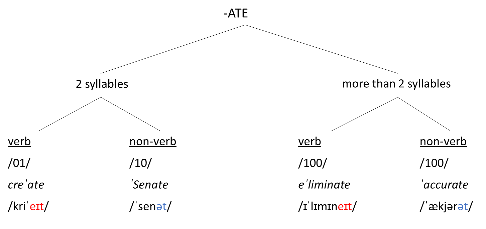
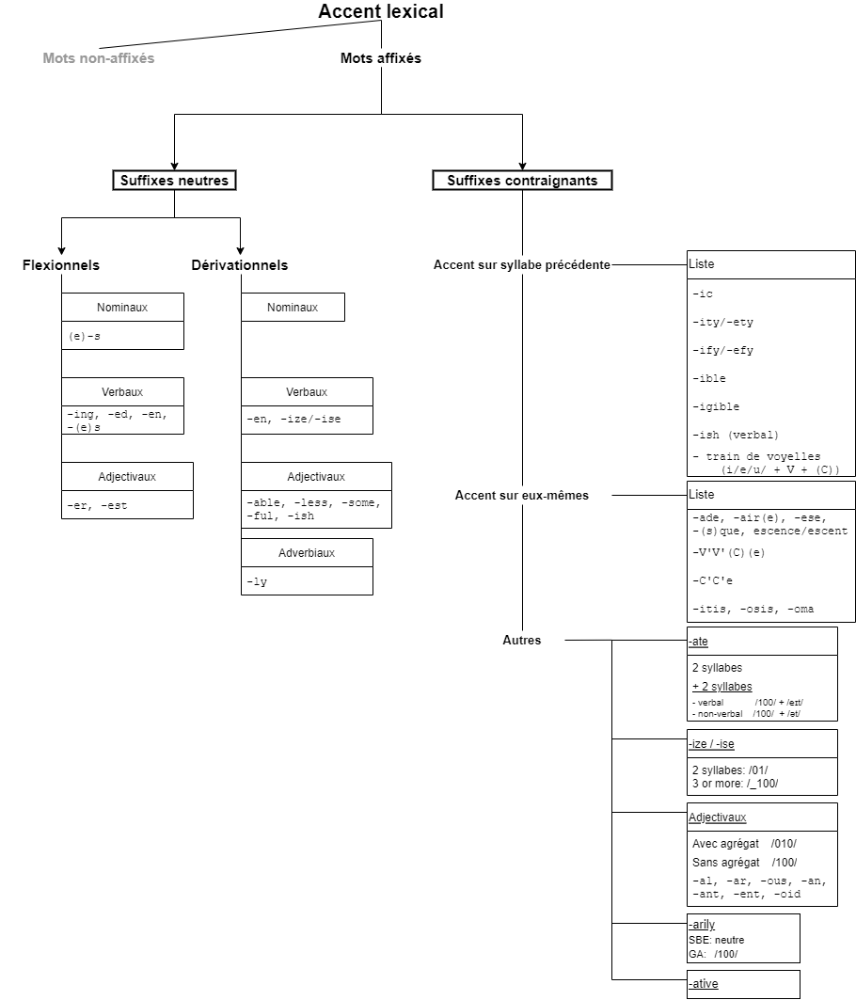
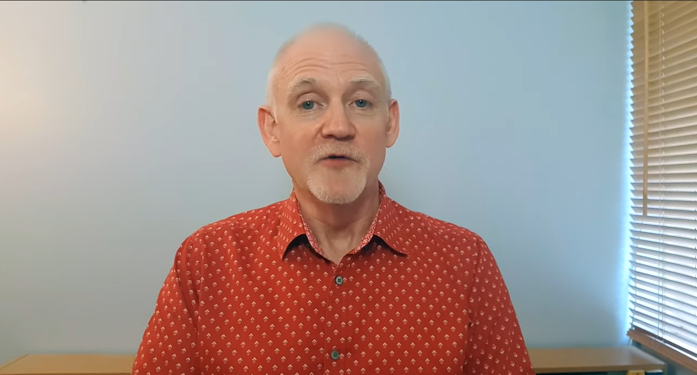

The stress pattern of words can sometimes be predicted based on their morphological structure. The presence of certain affixes (prefixes and suffixes) can determine the position of primary and secondary stress. Stress can be represented in different ways:
Orthographically: ˌunderˈstanding
Phonemically: /ˌʌndəˈstændɪŋ /
Where ˌ represents secondary stress and ˈ represents primary stress
In number notation: understanding /2010/
Where /2/ represents secondary stress, /1/ represents primary stress and /0/ represents no stress
🡪 With this type of notation, you have to be sure about the total number of syllables in the word you are analyzing.
There are a few general rules to remember:
Rhythmic constraints:
There is only one primary stress per word.
Secondary stress goes before primary stress, if present.
Stress Clash Avoidance Principle: Secondary and primary stress cannot go next to one another.
Rhythmic principle: A word cannot begin with two (or more) unstressed syllables.
Basic rule:
If the word does not contain a prefix or a suffix, it will usually:
be stressed as /10/ if it has two syllables (disyllabic words),
and as /_100/ if it has three or more syllables.
However, there are 270 exceptions to these rules, according to Deschamps et al.1
Derivational rule:
In longer words with suffixes, it might be difficult to determine where to place secondary stress: accomoˈdation /_ _ _ 10/
🡪 Secondary stress can go on the first or secondsyllable without violating any of the rhythmic constraints. To determine its place, you need to look for the place of the primary stress in the deriving word:
acˈcomodate /0100/
acˌcomoˈdation /02010/
Neutral suffixes do not change the stress pattern of the word they are attached to.
| Flexional suffixes | |||||
|---|---|---|---|---|---|
Nominal: -s (plural, genitive) |
|
|
|||
| Derivational suffixes | |||||
Adjectival: -able, -less, -some, -ful, -ing, -ive, -y, -ed, -th -ish (adjectival) |
Nominal: -y, -ty, -ry, -cy, -ism, -age, -ment, -ness, -dom, -hood, -ship, -man, -let, -land, -th Agentive nominal: -er, -or, -ar, -ist |
Verbal: -en, -ize/-ise |
Adverbial: -ly, -wise, -wards |
||
Examples of neutral suffixes:
'eatable /100/, de'velopment /0100/, 'caramelize
/1000/, 'uselessness /100/,
'backwards /10/, 'neighborhood /100/
NB: Pay attention to the number of syllables in each suffix, which might vary depending on their phonological surroundings. The flexional suffixes -ed and -s have a special behavior:
| -(e)d | -(e)s | ||
|---|---|---|---|
| Preceding phoneme | Pronunciation | Preceding phoneme | Pronunciation |
| V or C [+voice] |
/d/ 🡪 play,
played /ˈpleɪd/ 🡪 bag, bagged /ˈbægd/ |
V or C [+voice] |
/z/ 🡪 stay, stays /ˈsteɪz/ 🡪 plan, plans / ˈplænz/ |
| C [-voice] | /t/ 🡪 stop, stopped /ˈstɒpt/ | C [-voice] | /s/ 🡪 pat, pats / ˈpæts/ |
| /t/ or /d/ | /ɪd/ (or GA /əd/) 🡪 act, acted /ˈæktɪd/ |
/s/, /z/, /ʃ/, /ʒ/, /tʃ/, /dʒ/ |
/ɪz/ (or GA /əz/) 🡪 flash, flashes /ˈflæʃɪz/ 🡪 catch, catches /ˈkætʃɪz/ 🡪 judge, judges /ˈdʒʌdʒɪz/ |
There are three types of strong suffixes, which can help determine the place of the primary stress in a word:
Those that place stress in the syllable that precedes them.
Those that carry stress themselves.
Dynamic suffixes.
-IC: magˈnetic, ˌmoderˈnistic, symˈbolic,
ˌcharacteˈristic...
→ Exceptions: ˈpolitics, ˈCatholic, ˈArabic, ˈrhetoric, ˈlunatic,
aˈrithmetic, ˈarsenic, ˈheretic.
-ITY/-ETY: ethˈnicity, soˈciety,
ˌcrimiˈnality, ˌopporˈtunity...
→ no exceptions
-IFY/-EFY: ˈclassify, ˈstupefy, eˈxemplify,
huˈmidify...
→ no exceptions
-IBLE: colˈlapsible, comˈpatible,
ˌappreˈhensible, susˈceptible...
→ no exceptions
-IGIBLE: ˈeligible, ˈnegligible, ˈdirigible,
inˈtelligible...
→ no exceptions
-ISH (VERBAL): ˈnourish, deˈmolish,
reˈfurbish, reˈplenish...
→ 1 exception: imˈpoverish
i/e/u + V + (C) (Lion rule):
<i> + V+ (C) Auˈstralia, ˌcoefˈficient, phyˈsician
<e> + V+ (C) ˌmiscelˈlanea, hyˈdrangea
<u> + V+ (C) conˈtractual, garˈgantuan
🡪 These endings can have 1 or 2 syllables
Australia /ɒsˈtreɪ.li.ə/ (0100), phyˈsician /fɪˈzɪʃ.ən/
(010)
-ADE: greˈnade, paˈrade, ˌpaliˈsade,
ˌsereˈnade, ˌlemoˈnade (French words)
→ some exceptions: ˈdecade /10/, ˈrenegade /100/, ˈmarmalade
/100/...
-AIR(E): ˌmillioˈnaire, ˌbillioˈnaire, ˌdoctriˈnaire, ˌquestionˈnaire, ˌdeboˈnair, Aˌpolliˈnaire
-ESE: Chiˈnese, ˌCongoˈlese, ˌLebaˈnese, ˌPortuˈguese
-(S)QUE : anˈtique, baˈroque, maˈcaque, ˌMozamˈbique, ˌaraˈbesque, ˌhumoˈresque, ˌstatuˈesque, ˌRamboˈesque, ˌKafkaˈesque
-ESCENCE / -ESCENT: /-10/ˌadoˈlescence, ˌevaˈnescence, ˌincanˈdescence, ˌrecruˈdescence... ˌadoˈlescent, ˌefferˈvescent, ˌobsoˈlescent, ˌphosphoˈrescent, ˌremiˈniscent
<-V'V'(C)(e)>: traiˈnee, ˌrefuˈgee,
ˌnomiˈnee, ˌinterviewˈee... (→ suffixe -EE)
deˈgree, ˌchimpanˈzee, ˌjamboˈree…
bamˈboo, taˈboo, ˌkangaˈroo, ˌcockaˈtoo…
baˈzaar, genˈteel, eighˈteen, ˌengiˈneer, baˈboon, ˌCameˈroon…
caˈboose, paˈpoose…
→ Latin words in <-uum> do not fall under this category:
conˈtinuum, reˈsiduum, ˈvacuum (ici, <uum> = 2 distinct
vowels /ju.əm/ )
→ Other exceptions: ˈcuckoo, ˈigloo, ˈLiverpool, ˈvoodoo, ˈcoffee,
comˈmittee, ˈtoffee, ˈyankee,ˈapogee, ˈspondee, ˈtrochee, ˈteepee.
<-C'C'e>: giˈraffe, ˌaquaˈrelle, queˈnelle, ˌjuliˈenne, laˈcrosse, ˌlaundeˈrette...
-ATE:

-IZE / -ISE:
2-syllable words: /01/ re'vise, de'mise, dis'guise, de'vise
→ Exceptions (/10/): 'promise, 'premise, 'treatise /ɪz/
3 syllables or more: /_100/ 'supervise, 'compromise, 'maximize, 'analyze, a'pologize
Adjectival endings: -al, -ar, -ous, -an, -ant, -ent, -oid
Stress falls on the penultimate syllable if they contain a consonant cluster before the ending. /_10/
au'tumnal /010/, e’normous /010/, res'istant /010/
mal'ignant /010/, fila'mentous /2010/
Stress falls on the antepenultimate syllable if they do not contain a consonant cluster before the ending. /_100/
'clerical /100/, pre'posterous /0100/, 'confident /100/,
'nuclear /100/, perpen'dicular /20100/A note on phonological consonant clusters
Consonant clusters are combinations of two or more contiguous phonological consonants.
→ an <l> or an <r> at the right of a combination of consonants does not constitute a consonant cluster: nuclear, cable, fibre 🡪 NO CLUSTER
→ but an <l> or an <r> at the left of a combination of graphic consonants does: target, alternate 🡪 CLUSTER
→ ministry is a consonant cluster due to /st/, but not due to the <r> to its right.
Phonological clusters count, not orthographic ones:
→ Most double graphic consonants count just as one phonological consonant 'excellent /100/
→ The digraphs <th> /θ, t/, <ph> /f/ and <ch> /k/ = count as one: 'caliphal /100/, 'prognathous /100/, 'astichous /100/
→ The graphic consonant <x> /ks, kʃ, gz/ = counts as two: re'laxant /010/
→ The graphic consonant <g> /dʒ/ = counts as one, since /dʒ/ (just like / tʃ/) has a phonological value in English as a unit: 'negligent /100/
-ARILY
-LY is a neutral ending, and so is -ARILY in SBE.
'necessary /10(0)0/ /ˈnesəs(ə)ri/ 🡪 'necessarily /10(0)00/
/ˈnesəs(ə)rəli/
he'reditary /100(0)0/ /həˈredət(ə)ri/ 🡪 he'reditarily /010(0)00/
/həˈredət(ə)rəli/
-ARILY is strong in GA and imposes a /100/ ending.
ˈnecessary /1000/ /ˈnesəsəri/ 🡪 ˌnecesˈsarily /20100/ /ˌnesəˈserəli/
HOWEVER, In SBE, more and more words are starting to shift towards the GA realization:
ˈnecessary > ˌnecesˈsarily, ˌeleˈmentary > ˌelemenˈtarily, ˈordinary > ˌordiˈnarily
-ATIVE: Acts as neutral in most cases:
base + -ative = neutral
talk > ˈtalkative, proˈvoke > proˈvocative, deˈclare >
deˈclarative,
in'terpret > inˈterpretative, auˈthority > auˈthoritative,
iˈmagine > i'maginative...
verb in -ate with 3 syllables or more (/_100/) + -IVE =
neutral
acˈcelerate > acˈcelerative, ˈdecorate > ˈdecorative,
ˈeducate > ˈeducative, eˈlaborate > eˈlaborative, ˈcumulate >
ˈcumulative...
→ 4 important exceptions: ˈdemonstrate > deˈmonstrative, ˈindicate > inˈdicative, ˈalternate (vb) > alˈternative, inˈterrogate > ˌinterˈrogative
But it can act as a strong suffix too:
If the word cannot be traced back to a deriving word =
strong /_100/ ending:
ˈlucrative < *lucrate-, ˈtentative < *tentate-, ˈfricative <
*fricate-
verb in -ate with 2 syllables (/01/) + IVE =
strong /100/ ending:
reˈlate > ˈrelative, neˈgate > ˈnegative, narˈrate >
ˈnarrative,
seˈdate > ˈsedative, loˈcate > ˈlocative
→ Exception: creˈate > creˈative
If a word has several prefixes, the last strong one imposes its stress pattern:
Case 1: all weak suffixes
Powerlessness 🡪 BASE + LESS (weak) + NESS (weak) 🡪 /100/
'power /1/ 🡪 'powerless /10/ 🡪 'powerlessness
/100/
Case 2: strong and weak suffixes
Humidifying 🡪 BASE + IFY (strong) + ING (weak)
'humid /10/ 🡪 hu'midify /0100/ 🡪 hu'midifying
/01000/
Case 3: all strong suffixes
Visibility 🡪 BASE + IBLE (strong) + ITY (strong)
'vision /10/ 🡪 'visible /100/ 🡪 visi'bility
/20100/

Cannot be detached from the stem (either the prefix, or the stem, or both, are inactive in present-day English).
relate ≠ re + *late (no link to the adjective late)
deceive ≠ de + *ceive
understand ≠ under + *stand (not the same meaning as to stand)
inhume / exhume ≠ in / ex + *hume
Nouns: follow the same rules as non-prefixed words (so generally /10/, following basic rule)
Non-nouns: tend to not be stressed on the prefix. To determine their stress pattern, remove the prefix and assign stress on the stem following general stress pattern rules.
abject (adj.) 🡪 ab'ject, admit (v.) 🡪 ad'mit, impose (v.) 🡪 im'pose
HOWEVER, Some words can act as either nouns or verbs (e.g. present, institute, complement)
If the word has at least 3 syllables: the verb always follows
the pattern of nouns (/_100/)
'complement, 'interest, 'institute.
If the word has 2 syllables: Nouns are usually /10/ because they follow general stress pattern, vs. others can’t be stressed on the prefix (so necessarily /01/).
1) some words therefore have a different stress pattern according to
part of speech:
an ˈimport vs. (to) imˈport, a ˈrecord vs. (to) reˈcord
2) isomorphism /10/: both parts of speech follow stress pattern of
the noun:
ˈcombat, ˈcomment, ˈexile, ˈenvy, ˈincense, ˈoffer, ˈpreface, ˈsuffix,
ˈsojourn
3) isomorphism /01/: both parts of speech follow stress pattern of the word other than the N: conˈcern, acˈcount, deˈbate, disˈdain, disˈgrace, diˈvorce
Separable prefixes are analyzed independently, after the stem and suffixes have been analyzed.
They can be removed from their stem. The stem continues to exist as a word in present-day English and its semantic features do not change.
misconception, reexamine, unconformity
In cases of words with separable prefixes, one of the rhythmic
constraints can be violated:
There can be secondary stress next to primary stress:
ˌunˈtrue /21/ ˌdeˈcode /21/
There can even be secondary stress next to secondary
stress: ˌpreˌfabriˈcation /22010/
In words with monosyllabic stems (one-syllable stems), nouns and non-nouns behave in slightly different ways:
Non-nouns have secondary and primary stress, as
expected:
- I don't like the logo. Can you ˌreˈmake it
please?
- These people live ˌunderˈground.
Nouns carry primary stress on the prefix:
- This film is a ˈremake of Star Wars.
- The ˈunderground is crowded today.
Pronunciation of most common separable prefixes
- dis- (disagree), mis- (misgovern), in- (inadequate, illogical...),
mid- = /ɪ/
- ex- (ex-president) = /ˌeks/
- un- (unreal) = /ˌʌn/
- non- (non-intervention) = /ˌnɒn/
- sub- (subhuman) = /ˌsʌb/
- post (postnatal) = /ˌpəʊst/
- /ˌtræns/ + C[-voice] or /ˌtrænz/ + V /
C[+voice]
- pro- (pro-life) : /ˌprəʊ/
- co- (coauthor) : /ˌkəʊ/
- a- (amoral, atypical) : /ˌeɪ/
- de- = /ˌdiː/ (deactivate, dedramatize, decode, devalue...)
- pre- = /ˌpriː/ (predetermine, pre-exist, prepay, prehistoric...)
- re- = /ˌriː/ (reactivate, recompose, remodel, reread...)
PAY ATTENTION: These last three suffixes can sometimes be inseparable. If so, their pronunciation changes (full vowel for separable, reduced vowel for separable):
ˌdeˈcode /iː/ vs deˈduce /i/ ou /ɪ/ ou /ə/
ˌpreˈpay /iː/ vs preˈpare /i/ ou /ɪ/ ou /ə/
ˌreˈread /iː/ vs reˈgret /i/ ou /ɪ/ ou /ə/
Compound words can take different forms in English: they can be two separate words, (a family tree), or just one (a teacup), and sometimes with a hyphen (a six-pack). Some words have two spellings: a tea bag, a teabag. The more common the compound, the likelier it is to be written as one single word.
When there is no other rule, primary stress falls on the first syllable.
Eg. ˈgreenhouse, ˈhousing ˌproject
J.C. Wells says that the 2nd element then retains a
‘rhythmic beat’ instead of its normal stress. This sometimes results in
there being a secondary stress.
As a convention, when the two elements that make up the compound are monosyllabic, secondary stress is not transcribed.
ˈgreenhouse, ˈdaydream, ˈtoothbrush, ˈfootball 🡪 /10/
When the elements that make up compound words have more than one syllable each, secondary stress is transcribed (regardless of whether the compound is written in one single word, two or with a hyphen):
ˈparaˌgliding 🡪 /1020/, ˈpost ˌoffice 🡪 /120/, ˈfootball ˌplayer 🡪 /1020/
Specific cases of nouns with stress on the first element
Verb + direct object: ˈbreakfast, ˈceasefire, ˈdaredevil
Direct object + agent (-er / -or) ˈbaby-ˌsitter, ˈland-ˌowner, ˈbook-ˌseller
Direct object + Verb-ING ˈbear-ˌbaiting, ˈbook-ˌkeeping, ˈfox-ˌhunting
BUT ˌdata ˈprocessing
Verb-ING (role, function) + N ˈcarving ˌknife, ˈboarding-ˌschool, ˈchewing-ˌgum
‘is like’ ˈskinhead, ˈegghead
Adjectival genitives [génériques] a ˈbutcher’s ˌknife, ˈchildren’s ˌbooks
Linked genitives, = N+s+N ˈcraftsman, ˈtradesman, ˈsalesroom
Nouns derived from phrasal verbs ˈcomeback, ˈpullˌover
vs. phrasal verbs are stressed on both the verb and the adverbial particle:
(to) ˈcome ˈback, ...
Back- (if spelled as one word) ˈbackstreet
BUT ˌback ˈdoor, ˌback ˈgarden
1st element is a spatial or temporal marker ˈChristmas ˌtree, ˈsea-ˌsickness, ˈnightcap
BUT ˌevening ˈprayer, ˌApril ˈFool, ˌday reˈturn, ˌspring-ˈcleaning,
ˌweek-ˈend, ˌcountryˈdance, ˌcountry ˈhouse, ˌkitchen ˈgarden, ˌHome ˈRule, ˌtown ˈhall, ...
Specific cases of words with stress on the second element
Adj. + Noun ˌpolar ˈbear, ˌcentral ˈheating, ˌroast ˈbeef
Compound Adj. ˌbitter-ˈsweet, ˌdark ˈblue, ˌred
ˈhot, ˌin-ˈdepth
ˌgood-ˈhumoured, ˌold-ˈfashioned, ˌwarm-ˈblooded
Determiner genitives [spécifiques] the ˌdoctor’s ˈcar, ˌPeter’s ˈhorse
Verb-ING + Noun where Verb + -ING ˌstudying ˈpartner, ˌruling ˈclass, ˌworking ˈclass
does not indicate role or function
1st element is the material / origin of the 2nd ˌbrick ˈwall, ˌarmy ˈofficer, ˌgold ˈwatch, ˌolive ˈoil
BUT - if the second element describes shape, stress falls on the first syllable:
ˈice cube, ˈsnowflake, ˈbloodstain
with CAKE, JUICE, MILK and WATER, stress on the first element: ˈchocolate cake, ˈorange juice, ˈcoconut milk, ˈsoda water
1st element gives rank / age / sex ˌQueen ˈbee, ˌfellow ˈcreature, ˌFather ˈChristmas
[...] + avenue, boulevard, [names of roads] ... ˌLeicester ˈSquare, ˌOxford ˈRoad, ˌOxford ˈCircus,
BUT [...] + street = stress on 1st element: ˈBaker ˌStreet, ˈOxford ˌStreet,
ˈDowning ˌStreet
Place names ˌLoch ˈNess, ˌPanama Caˈnal, Niˌagara ˈFalls
Learned Compounds:
Words made of 2 combining forms (that are not autonomous, unlike prototypical
compounds) of Italian, Greek or Latin origin. Eg. epilogue, phonograph, television...
1) if no particular rule, stress falls on the 1st
element, as in the basic rule for all compounds (isolate the
1st element and apply normal rules. Eg. galˈvanoscope,
ˈtelevision
because galvano / tele = ‘Italian’ words).
2) if there is a stress-imposing ending, imposes stress. Eg. ˌtelegraphˈese, ˌcentrifuˈgation
3) when there is a consonant cluster before last syllable, stressed on penultimate (/_10/): Eg. ˌrhodoˈdendron, ˌhippoˈcampus.
Other specific rules :
compounds including –EVER are stressed on –EVER. Eg. howˈever
ANY-, SOME-, NO- are stressed. Eg. ˈnobody
-SELF / -SELVES are always stressed. Eg. him’self
-HOOD not stressed. Eg. ˈmanhood

More on compound words and phrases (with superheroes): Dr Geoff Lindsey
https://www.youtube.com/watch?v=mTk2XQNsH1Y
Not that many, in the grand scheme of things.
DESCHAMPS Alain, DUCHET Jean-Louis, FOURNIER Jean-Michel et O’NEIL
Michael, English Phonology and Graphophonemics. Paris: Ophrys,
2004.↩︎